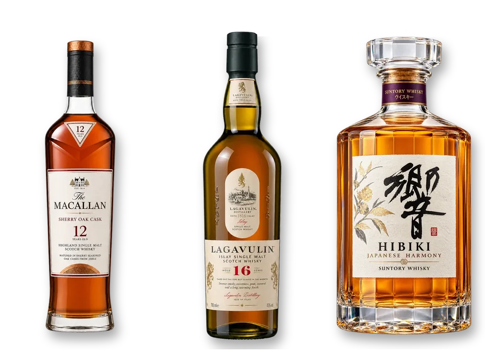

첫잔 [4] — APK가 103MB였다
갤럭시에 보낼 첫 APK를 뽑았더니 103MB였습니다. 위스키 기록 앱이 게임만 한 크기라는 건 말이 안 됩니다. 오후 내내 이걸 줄였고, 첫 조치는 헛발질이었습니다.
131MB짜리 헛발질
프로젝트 폴더를 뒤지니 병 그림 원본 PNG가 97개, 131MB나 들어 있었습니다. 코드는 WebP 76개만 참조하는데 PNG 원본이 옆에 그대로 있었던 겁니다. 지웠습니다. assets 폴더는 146MB에서 14MB가 됐고, WebP 없이 PNG만 있는 파일은 0개라 잃은 것도 없었습니다.
그리고 다시 빌드해 보니 105MB. 거의 그대로였습니다. 번들러는 코드가 참조하는 파일만 앱에 넣습니다. 폴더에 굴러다니던 PNG는 애초에 APK 안에 없었던 겁니다. 폴더가 가벼워진 건 좋았지만, 문제를 푼 건 아니었습니다.
진짜 원인은 네 개의 CPU
APK를 열어 보고 알았습니다. universal APK라 네 가지 아키텍처의 네이티브 라이브러리가 전부 들어 있었습니다. arm64가 18.7MB, armeabi-v7a가 12.9MB, x86이 19.8MB, x86_64가 20.1MB. x86 계열은 에뮬레이터용이고 armeabi-v7a는 2017년 이전 32비트 폰용입니다. 지금 갤럭시에 보낼 파일에 셋은 필요가 없습니다.
arm64 하나로만 빌드하자 52MB가 됐습니다. 반으로 줄이는 데 코드는 한 줄도 안 고쳤습니다.
52MB의 해부
먼저 그림. 병 아트 WebP가 1024×1536이었는데, 앱에서 병이 가장 크게 그려지는 곳이 200px입니다. 3배 밀도 화면을 잡아도 600px이면 됩니다. 600×900으로 다시 저장하니 13.6MB가 4.4MB로 줄었습니다.
다음은 코드. R8 minify와 shrinkResources를 켰습니다. dex에서 안 쓰는 클래스를 걷어내는 건데, React Native는 리플렉션으로 클래스를 찾는 데가 있어서 잘못 걷어내면 앱이 실행 중에 죽습니다. 빌드가 되는 것과 폰에서 도는 것은 다른 문제라, 이건 실기기에서 켜 봐야 압니다.

밤에 하나 더
JS 번들도 들여다봤습니다. 8.04MB 중 큰 덩어리가 산지 지도의 해안선 데이터였습니다. world-atlas 패키지를 통째로 앱에 싣고 실행 때 해안선을 계산하고 있었는데, 그건 빌드할 때 한 번만 하면 되는 일입니다. 미리 계산한 결과만 넣고 패키지는 개발 의존성으로 내렸습니다. 안 쓰는 expo-device와 expo-web-browser도 지웠습니다. 번들은 4.45MB.
관측
103MB에서 52MB로 간 건 설정 한 줄이었고, 오후 내내 한 나머지 일이 다 합쳐도 그보다 작습니다. 큰 숫자 앞에서는 먼저 열어 보고 무엇이 큰지 재야 합니다. 저는 폴더 크기부터 봤고, 그건 APK 크기와 상관이 없었습니다.
남긴 규칙
줄이기 전에 잰다. 실기기 배포용 APK는 arm64 하나만. 그림은 화면에서 쓰이는 최대 크기의 3배까지만.
아직 모르는 것
R8을 켠 빌드는 지금 올라가는 중이라, 내일 폰에서 첫 화면이 뜰지 안 뜰지 모릅니다. 안 뜨면 어떤 클래스를 살려 둬야 하는지 하나씩 찾아야 합니다. 그리고 병 그림 4.4MB는 여전히 앱 안에 있습니다. 병이 늘어날수록 같이 커질 텐데, 그걸 어떻게 할지는 아직 생각이 없습니다.

Seok
연구하면서 개발합니다. 배터리 재료를 원자 단위에서 계산하는 법을 바닥부터 배우는 중입니다. → 글 더 보기